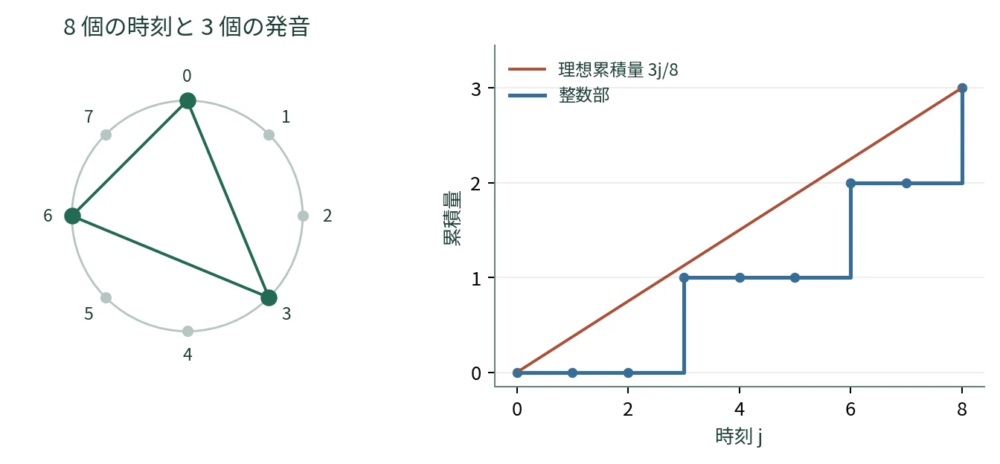

第49章 三つの手拍子を八つの椅子に座らせる
8拍に3打をできるだけ均等に置く。ユークリッド・リズムの数学。
この章で学ぶこと
- 「まんべんなく」を均衡性として定義する
- 整数部の差の式で、均等な打点列を作る
- 互除法とリズムの関係を知り、録音で確かめる
八つ数えるあいだに三回だけ手を打つ。一発目を頭に置くなら、残り二発はどこがよいだろう。三等分したくても、手を打てる場所は八つしかない。三つの間隔を とすれば演奏できるが、最後の間がずいぶん空く。 と打って繰り返すと、長短の差を一目盛りに収められる。ここで起きたことは、傾いた直線を四角いピクセルからなる画面に描くときにも起きる。
「まんべんなく」を測る
一周を 等分し、打点を 個置く。 とし、位置は整数 で数える。時計のように と は同じ位置である。素朴には「隣り合う打点の間隔が二種類で、差が一」と決めたくなる。しかし十六目盛り六打で、間隔を と置くと、短い間隔が終わりに偏る。窓を違う位置から開けても、同じ長さなら中に見える打点の個数が高々一しか違わない、という強い条件を採ろう。これを均衡性と呼ぶ。たとえば先の反例で位置 に打つと、五目盛りの窓 〜 には一打、〜 には三打が入る。
小数の余りを捨てずに次の目盛りへ運ぶには、それまでに何打ぶん蓄積したかを数えればよい。理想の累積量は 。 を 以下の最大の整数とし、次の差が の時刻に発音する。
命題。 この列は 周期で、任意の連続 目盛りに入る打数は または である。 は 以上の最小の整数を表す。
証明を読む（読まなくても先へ進めます）
を 増やすと両方の整数部に同じ が足される。隣り合う累積量の差は なので は か である。時刻 から まで足すと中間項が相殺し、 が残る。 の小数部分を とおけば、これは であり、。したがって結論の二値に限られ、 ならちょうど 打である。

互除法が現れる場所
八を三で割って商二、余り二を得る。各間隔に二目盛りを入れたうえで、余った二目盛りを別々の間隔へ一つずつ渡す。十三目盛り五打なら、まず だから五つの間のうち三つを長くする。ではその三つをどこに置くか。同じ問いが今度は五席三個となり、、、 と縮む。これがユークリッド互除法の余りの列である。上の整数部差は各段を展開せずに最終配列を指定する方法になっている。実際、 個目の累積整数に初めて届く目盛りは なので、十三と五では零から に打つ。隣の間隔は 。この書き出し方では一周の切れ目も指定してある。異なる手順で求めた列を比較するときは、円を回す自由があるかを先に決めよう。
録音と手拍子の距離
《Hound Dog》のエルヴィス・プレスリーによる1956年録音を聴く。ゴッドフリード・トゥーサンは低音の型を の実例に挙げた。歌に合わせて手を打つ前に四拍を足で刻み、八分音符に分け、紙の を指でなぞる。次に低音の一巡だけを追う。どの音を骨格として選べば三打に収まるか、どこで聞き取りがあいまいかも記す。録音には歌の子音の立ち上がりやドラムの細かい打撃まである。一つの整数列にどの音を写したかが、分析結果の一部である。キューバのトレシージョに対応する骨格と音楽家が実際に使った発想法は、それぞれ別の史料から調べる問いになる。
本書の試聴《三つの椅子》では短い低音が八目盛りを刻み、高音が一周に三回鳴る。五周目から中音を位置 に足した。高音の発音時刻を動かさずに、目盛り の一打が次の中音を呼び込むように聞こえるか試そう。次に冒頭へ戻り、頭拍を意図的に三目盛りずらして数え直す。図形の回転、聞き手の頭拍、録音に刻まれた打点は独立に操作できる。本書の試聴《三つの椅子》
演習と解答
やってみよう
演習。 十六目盛り六打の整数部差を求める。それを各周で異なる六音の旋律にしても、八目盛りで同じものが繰り返すといえるだろうか。
解答を見る（先に自分で考えてから）
だから式は八目盛り三打と同じで、 に鳴る。より短い周期 があるなら、一周期の打数は平均密度から で整数、従って 。発音の有無だけを採った列の最小周期は八である。一方、六打に順にド・レ・ミ・ファ・ソ・ラを与えて繰り返すと、八目盛り先の最初の音はファになる。数学的にどの特徴の周期を測ったかを決めることが、耳で発見した周期の説明を変える。拍節の章で扱う強弱の層も、この方法で加えられる。
ここだけ押さえる
- 8目盛りに3打なら 3+3+2（位置 0・3・6）。
- 床関数の差の式を使うと、同じ長さのどの区間をとっても打数の違いが1以内に収まる列が作れる。
- 録音のどの音を整数列に写したかも、分析結果の一部。
この章の資料
- トゥーサンの原論文。図1で三打の配置を時計回りにたどり、八目盛りの他の型と比べる。Godfried Toussaint, The Euclidean Algorithm Generates Traditional Musical Rhythms
- 1956年7月2日の録音情報。低音の演奏者と使われた楽器群を確認してから音源に戻る。エルヴィス・プレスリー公式録音目録
- 同録音を通して聴き、三打に聞こえる層と、自分が数えている均等な四拍を並べて記録する。《Hound Dog》公式音源